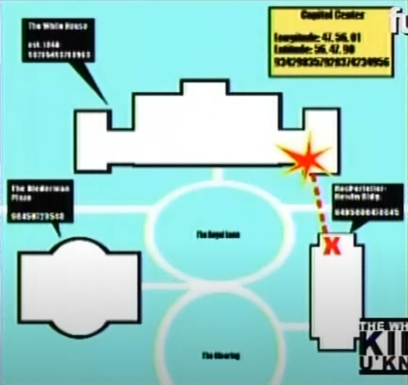
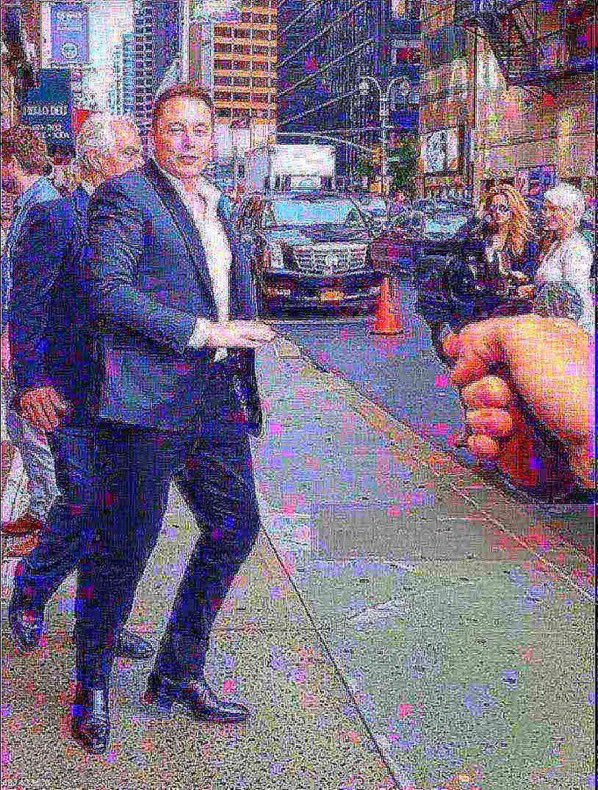

|  |
randomly chosen string: N628TS Fortune: Elon Musk takes the return to office to new extremes—he claims he’s turned DOGE’s D.C. headquarters [The Eisenhower Executive Office Building] into his bedroom  vision i had, generated with grok via synapses |